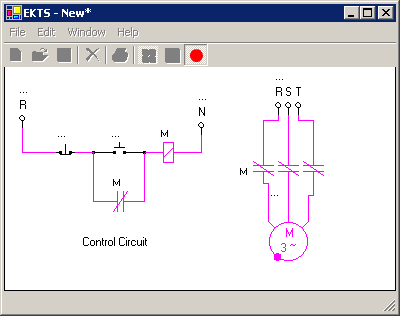

To run designed circuit click on Run button located on tool bar. If there is any problem with circuit, program will alert an error message. You have to correct errors to run the circuit properly.
While program is in run mode, you can control circuit by pressing on start / stop buttons or directly on relays using mouse pointer. To leave switches remaining pressed, right click on them and click again for releasing. In run mode active lines and active elements showed by magenta color as shown in Figure 11. Rotation of motor is specified by green point on it.
To stop circuit click on  Stop button.
Stop button.

Figure 12Run mode of the designed circuit.